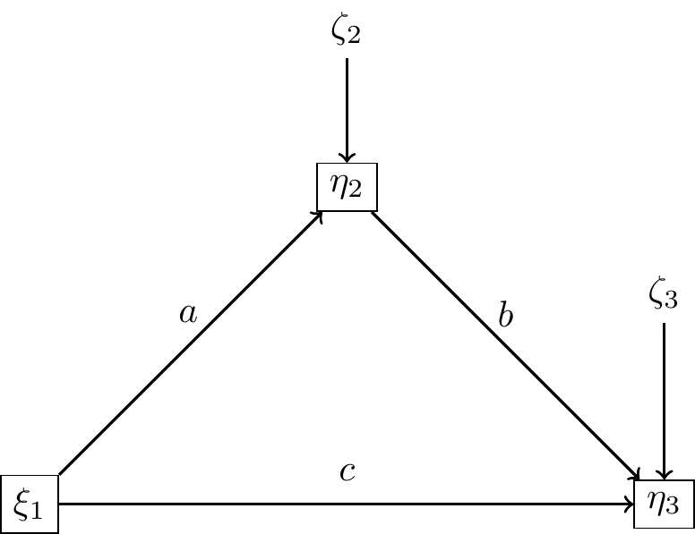
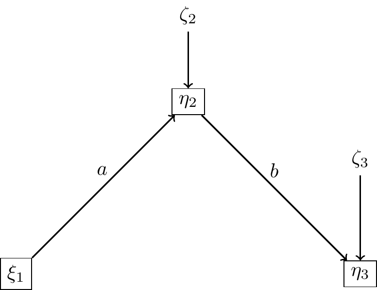
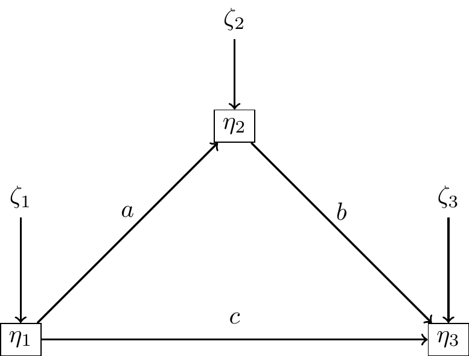
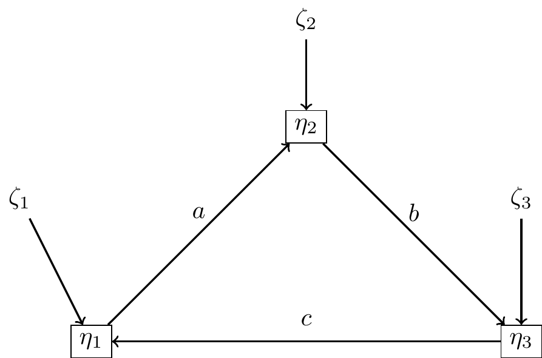
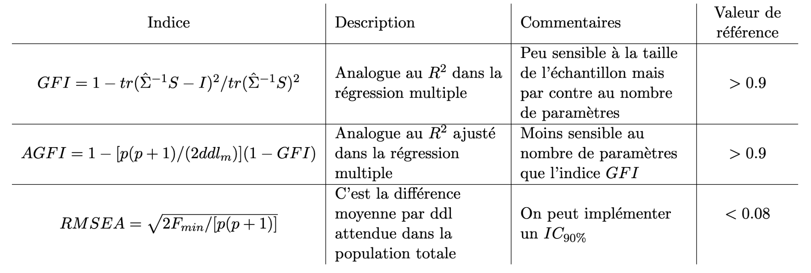
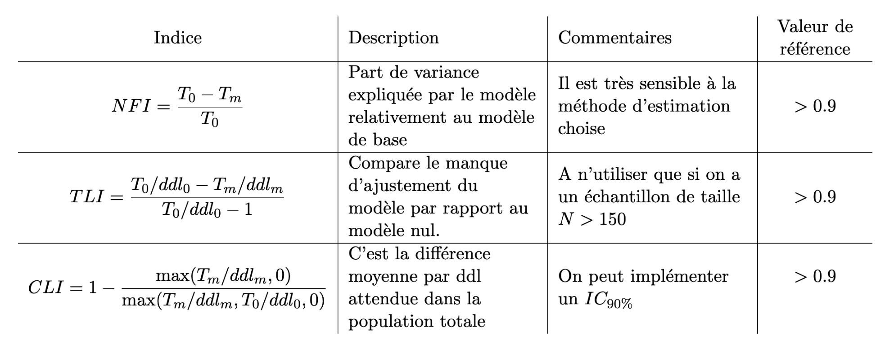

Introduction
Toutes les notions développées ont été développées par Jöreskog (1970) qui a crée le premier logiciel de référence LISREL (Jöreskog et Sörbom 1996).
Un livre de référence contenant les notions abordées est Bollen (1989).
On va se placer dans le cadre Path-Analysis qui est plus simple (au niveau des notations) c’est à dire avec uniquement des variables observées. Toutes les notions et formulent se généralisent sans difficulté aux SEM intégrant un modèle de mesure.
Références
Jöreskog, K.G., Sörbom, D., 1996. LISREL 8 : User’s Reference Guide. Scientific Software International, Inc. 28, 142, 187
Bollen, K., 1989. Structural equations with latent variables. Wiley-Interscience. 28, 30, 57
Le modèle de médiation (version 1)
- \(\xi_1\) : variable exogène (variable d’exposition)
- \(\eta_1\) : variable endogène (variable médiatrice)
- \(\eta_2\) : variable endogène (variable réponse)

Hypothèses principales du modèle:
Les erreurs \(\zeta_j\) et les variables exogènes \(\xi_i\) ne sont pas corrélées
Les erreurs \(\zeta_j\) ne sont pas corrélées entre elles.
Hypothèses additionnelles
Ces hypothèses ne servent qu’à simplifier l’écriture du modèle, elles ne seront pas nécessairement vérifiées en pratique.
Les variables endogènes et exogènes sont standardisées
\[ \mathbb E(\eta_j)=\mathbb E(\xi_k)=0, \ \mathbb V(\eta_j)=\mathbb V(\xi_k)=0 \]
Matrice de corrélation du modèle
On a le système d’équations linéaires
\[ \begin{cases} \eta_1=a\xi_1+\zeta_1 \\ \eta_2=c\xi_1+b\eta_1+\zeta_2 \end{cases} \] On note \(\sigma^2_k\) les variances des erreurs \(\zeta_k\).
Compte tenu de toutes les hypothèses précédentes on peut écrire la matrice de corrélation impliquée :
\[ \Sigma(a,b,c)=\left( \begin{array}{ccc} 1 & a & ab+c \\ & a^2+\sigma_1^2 & b+ca \\ & & c^2+b^2+abc+\sigma_2^2 \end{array} \right) \]
On considère la matrice de corrélation observée :
\[ S=\left( \begin{array}{ccc} 1 & r_{12} & r_{13} \\ & 1 & r_{23} \\ & & 1 \end{array} \right) \] On a donc 5 paramètres à estimer avec 5 observations. L’ajustement va donc être parfait (aux erreurs numériques près) !
Approche par moindres carrés
En analyse de régression on veut minimiser la somme des carrés écarts des points du nuage aux valeurs prédites (OLS : Ordinary Least Squared) ici on veut minimiser :
\[F_{ULS}=\frac1{2}\Vert \Sigma-S\Vert^2,\] où \(\Vert \bullet \Vert\) est la norme de Frobenius. Cette estimation s’appelle ULS (Unweighted Least Squared)
Remarque : Les estimateurs des moindres carrés et du maximum de vraisemblance coïncident dans le cas de la régression ce n’est pas le cas avec les matrices de covariance (il faudra pondérer par une matrice \(W\)).
Exemple sur lavaan
library(lavaan)
set.seed("44")
n<-100
X<-rnorm(n)
sigM<-1
sigY<-2
a<-1
c<-3
b<-2
M<-a*X+rnorm(n,0,sigM)
Y<-c*X+b*M+rnorm(n,0,sigY)
model<-'
M~a*X
Y~c*X+b*M
## effets
I:=a*b
T:=a*b+c
'
df<-data.frame(M=M,Y=Y,X=X)
res<-sem(model,data=df)
summary(res)lavaan 0.6.17 ended normally after 1 iteration
Estimator ML
Optimization method NLMINB
Number of model parameters 5
Number of observations 100
Model Test User Model:
Test statistic 0.000
Degrees of freedom 0
Parameter Estimates:
Standard errors Standard
Information Expected
Information saturated (h1) model Structured
Regressions:
Estimate Std.Err z-value P(>|z|)
M ~
X (a) 0.970 0.086 11.256 0.000
Y ~
X (c) 2.823 0.265 10.649 0.000
M (b) 1.935 0.204 9.472 0.000
Variances:
Estimate Std.Err z-value P(>|z|)
.M 0.938 0.133 7.071 0.000
.Y 3.917 0.554 7.071 0.000
Defined Parameters:
Estimate Std.Err z-value P(>|z|)
I 1.877 0.259 7.247 0.000
T 4.700 0.243 19.381 0.000# Matrice de covariance observée
cov(df) M Y X
M 2.148846 7.652921 1.238055
Y 7.652921 35.697306 5.998395
X 1.238055 5.998395 1.276278# Matrice de covariance estimée avec le modèle
fitted(res)$cov
M Y X
M 2.127
Y 7.576 35.340
X 1.226 5.938 1.264Modèle de médiation (version 2)

Matrice de corrélation du modèle
On a le système d’équations linéaires
\[ \begin{cases} \eta_1=a\xi_1+\zeta_1 \\ \eta_2=b\eta_1+\zeta_2 \end{cases} \]
La matrice de corrélation impliquée :
\[ \Sigma(a,b,c)=\left( \begin{array}{ccc} 1 & a & ab\\ & a^2+\sigma_1^2 & b \\ & & b^2+\sigma_2^2 \end{array} \right) \]
Dans ce cas il nous reste un degré de liberté !
model<-'
M~a*X
Y~b*M
## effets
I:=a*b
'
res2<-sem(model,data=df)
summary(res2)lavaan 0.6.17 ended normally after 2 iterations
Estimator ML
Optimization method NLMINB
Number of model parameters 4
Number of observations 100
Model Test User Model:
Test statistic 75.796
Degrees of freedom 1
P-value (Chi-square) 0.000
Parameter Estimates:
Standard errors Standard
Information Expected
Information saturated (h1) model Structured
Regressions:
Estimate Std.Err z-value P(>|z|)
M ~
X (a) 0.970 0.086 11.256 0.000
Y ~
M (b) 3.561 0.198 17.968 0.000
Variances:
Estimate Std.Err z-value P(>|z|)
.M 0.938 0.133 7.071 0.000
.Y 8.358 1.182 7.071 0.000
Defined Parameters:
Estimate Std.Err z-value P(>|z|)
I 3.455 0.362 9.539 0.000# Matrice de covariance observée
cov(df) M Y X
M 2.148846 7.652921 1.238055
Y 7.652921 35.697306 5.998395
X 1.238055 5.998395 1.276278# Matrice de covariance estimée avec le modèle
fitted(res2)$cov
M Y X
M 2.127
Y 7.576 35.340
X 1.226 4.365 1.264Dans ca cas on voit que l’on estime beaucoup moins bien la covariance \(X,Y\). C’était attendu puisqu”il n’y a plus de path entre \(X\) et \(Y\) alors que \(c=3\) !
Retour au modèle général
On suppose que le modèle possède
\(q\) variables exogènes \(\xi_1,...,\xi_p\)
\(p\) variables endogènes \(\eta_1,...,\eta_p\)
Pour tout \(j=1,...,q\) \[\eta_j=\sum_{i\in J} \beta_{j,i}\eta_i+\sum_{k= 1}^p\gamma_{j,i}\xi_k+\zeta_j\] où \(J=\{1,...,p\}- \{j \}\) et \(\zeta_k\) est l’erreur du modèle.
On écrit :
\[\eta_{(p\times 1)}= \Gamma_{(p\times q)}\xi_{(p\times q)}+ {\bf B}_{(p\times p)}\eta_{(p\times q)}+ \zeta_{(p\times 1)}\]
Formule de Jorëskog
On considère les matrices de corrélation des variables exogènes et des erreurs \[\Phi=\mathbb E(\xi\xi^T), \quad \Psi=\mathbb E(\zeta\zeta^T) \]
\[\boxed{\Sigma(\theta)=\left( \begin{array}{cc} \Phi & \Phi \Gamma^T\widetilde B^T \\ \widetilde B \Gamma \Phi & \widetilde B( \Gamma \Phi \Gamma^T+\Psi)\widetilde B^T \end{array}\right)}\]
où \(\tilde B=(I-\bf{B})^{-1},\) et \(\theta\) est l’ensemble des paramètres à estimer.
Modèles récursifs
Un modèle est récursif lorsque \({\bf B}\) est triangulaire supérieure (ou inférieure).

\[{\bf B}=\left(\begin{array}{ccc} 0 & a & c \\ 0 & 0 & b \\ 0 & 0 & 0 \end{array}\right)\]

\[{\bf B}=\left(\begin{array}{ccc} 0 & a & 0 \\ 0 & 0 & b \\ c & 0 & 0 \end{array}\right)\]
Exercice
Déterminer les matrices \({\bf B}, \Gamma.\)

Estimation de \(\Sigma(\theta)\)
Soit \(\theta\) le vecteur des paramètres à estimer (on suppose qu’il contient \(t\) paramètres).
Le but est de déterminer \(\theta\) pour que \[\Sigma(\theta)\simeq S,\] l’estimation étant la “meilleure possible”.
Comme souvent en statistique, cela revient à minimiser une fonction de coût \(F\). On suppose que cette fonction \(F\) vérifie :
A. \(F(S,\Sigma(\theta))\geq 0\)
B. \(F(S,\Sigma(\theta))= 0\) si et seulement si \(S= \Sigma(\theta))\)
C. \(F\) est continue en \(S\) et en \(\Sigma(\theta).\)
Remarque :
Le nombre de paramètres \(t\) à estimer peut être grand il doit de toute façon vérifier ` \[ t < \frac{(p+q)(p+q+1)}{2} \]
Maximum de vraisemblance
[Jöreskog, K. G. (1967), “Some Contributions to Maximum Likelihood Factor Analysis,” Psychometrika, 32, 44]
On suppose que :
\((x_1,...,x_p,y_1,...,y_q)^T \sim \mathcal N (0,\Sigma)\), où \(\Sigma\) est la matrice de covariance des variables \(\bf{x,y}\) (sur la population).
\(\Sigma\) et \(S\) sont définies positives.
La première hypothèse revient à considérer que l’ensemble de l’information entre les variables impliquées est contenue dans les moments d’ordre 1 et 2 (moyennes et covariances).
Un premier problème peut se poser si la matrice \(S\) n’est pas définie positive ….
On a : \[F_{ML}(\theta)=\log|\Sigma|+trace(S\Sigma^{-1})-\log|S|-(p+q),\]
Important
\(F_{ML}\) a bien les 3 propriétés attendues.
La solution n’est pas toujours explicite \(\leadsto\) procédures algorithmiques pour le calculer.
Asymptotiquement, \(\widehat \theta_{ML}\) est non biaisé, consistant, efficace (ie parmi les estimateurs consistants de \(\theta\) il a la plus petite variance asymptotique).
La distribution de \(\widehat \theta_{ML}\) est normale \(\leadsto\) on peut faire des tests…
Approches pondérées
\[ F_{W}=\frac 1{2}trace\left( [S-\Sigma(\theta)]^2W^{-1}\right), \] où \(W\) est une matrice de poids (définie positive) pour la partie résiduelle du modèle.
Lorsque \(W=I\) il s’agit de la méthode des moindres carrés non pondérés \(ULS\) (cf Jöreskog (1977) “Structural Equation Models in the Social Sciences: Specification, Estimation and Testing,” in Applications of Statistics, P. R. Krishnaiah, ed. Amsterdam: North-Holland Publishing Co., 265-87) Dans ce cas l’analogie avec la régression OLS est évidente.
Lorsque \(W=S\) il s’agit de la méthode des moindres carrés généralisés \(GLS\) (cf Browne, M. W. (1974). Generalized least squares estimators in the analysis of covariance structures. South African Statistical Journal, 8, 1–24.)
Remarque
Pour assurer des bonnes propriétés à \(\widehat \theta_{GLS}\) il faut ajouter quelques hypothèses, mais en pratique elles sont souvent moins restrictives que celles pour le ML.
Autre approche : Browne, M.W. (1984), Asymptotically distribution-free methods for the analysis of covariance structures. British Journal of Mathematical and Statistical Psychology, 37: 62-83. https://doi.org/10.1111/j.2044-8317.1984.tb00789.x
\[ F_{WLS}=\frac 1{2}trace\left( [S-\Sigma(\theta)]^TW^{-1}[S-\Sigma(\theta)]\right), \]
Si on prend \(W=S\) qui est (sous certaines conditions) une estimation asymptotique de la matrice de covariance de la population.
Le gros inconvenient de cette approche est qu’elle nécessite un très grand nombre d’observation (\(n>1000\)).
On peut considérer une matrice de poids diagonale (DWLS)
Pour des variables mesurées ordinales (ce qui est le cas dans la plupart des applications), sous la condition qu’elles mesurent une variable latente continue, Muthen (1984) a développé une approche robuste dérivée de WLS basée sur la matrice de corrélations polychoriques qui montre de très bonnes propriétés en pratique.
Comparaison de ces approches
- Si on considère la normalité des variables \(\bf{x,y}\) ces trois approches sont asymptotiquement équivalentes.
Quelques références de comparaison de ces méthodes :
Ulf Henning Olsson , Tron Foss , Sigurd V. Troye & Roy D. Howell (2000) The Performance of ML, GLS, and WLS Estimation in Structural Equation Modeling Under Conditions of Misspecification and Nonnormality, Structural Equation Modeling: A Multidisciplinary Journal, 7:4, 557-595, DOI: 10.1207/S15328007SEM0704_3
Li CH. The performance of ML, DWLS, and ULS estimation with robust corrections in structural equation models with ordinal variables. Psychol Methods. 2016 Sep;21(3):369-87. doi: 10.1037/met0000093. PMID: 27571021.
Conclusion :
Il existe d’autres approches MLR, FIM, …
Mesure de qualité du modèle
Premières vérifications
Avant toute interprétation on peut vérifier si l’algorithme d’estimation a bien convergé en vérifiant :
aucune variance n’est négative,
aucune corrélation n’est supérieure à 1 (ou inférieure à \(-1\)),
la matrice de covariance est non définie positive.
Ensuite il exsite de très nombreux indices d’ajustements différents. On va en regarder quelques uns.
Test du \(\chi¨2\) (Jöreskog 1967)
On teste \(H_0 : \Sigma(\theta)=\Sigma\) contre \(H_1 : \Sigma(\theta)\not =\Sigma\)
On teste cette hypothèse par un rapport de vraisemblance (on ramène \(H_0\) à \(\Sigma(\hat \theta)=S\))
\[ T=-2(\log(L_0(\hat\theta))-\log(L_1(\hat\theta))=(n-1)F_{ML} \] Sous des conditions de régularité et avec \(n\) grand la statistique \(T\sim \chi^2\) à \(k=\frac1{2}(p+q)(p+q+1)-t\) degré de liberté.
La méthode d’estimation des paramètres par maximum de vraisemblance n’est que très peu biaisée en cas de non normalité alors que la statistique \(T\) l’est et ce test est beaucoup trop peu conservateur.
Bollen (1986) propose une version standardisée de \(T\) (une loi du \(\chi^2\) a pour moyenne \(k\) et variance \(2k\)) donc on considère \(\tilde T=\frac{T-k}{\sqrt{2k}}\)
Enfin Satorra-Bentler (1999) propose une une version de \(T=c^{-1}T\) où \(c\) est l’applatissement de la courbe (kurtosis).
références
Bollen, K., 1986. Sample size and Bentler and Bonett’s nonnormed fit index. Psychometrika 51(3), 375–377. 32
Satorra, A., Bentler, P.M., 1999. Corrections to test statistics and standard errors in covariance struc- ture analysis. In : Von Eye, A., Clogg, C. (Eds.), Latent Variables Analysis, Applications to Deve- lopmental Research. Thousand Oaks, Ca, Sage, pp. 399–419. 32, 36
Indices absolu (modèle de mesure) :
Il existe d’autres indices qui sont listés dans le tableau suivant ils ont tous leurs qualités et leurs défauts, aucun ne s’étant révélé idéal empiriquement.

Indices incrémentaux (modèle de mesure) :
On va comparer le modèle estimé au modèle “nul” c’est à dire au modèle qui suppose la non-corrélation de toutes les variables observées et des variables latentes associées (on notera \(T_0\) la statistique associée à ce modèle). Un indice dit “incrémental” mesure l’amélioration de l’ajustement entre le modèle nul et le modèle testé. Là-encore il existe beaucoup d’indices

Indices de parcimonie
Les questions de sur-estimation et sous-estimation de modèles doivent être posées, le cas le plus fréquent est la sur-estimation du modèle qui induira une augmentation artificielle de l’ajustement du modèle aux données. Ils permettent en particulier de trouver un juste milieu entre deux buts opposés : minimiser le nombre de coefficients à estimer et d’autre part améliorer la qualité d’ajustement du modèle aux données. Ces indices sont des indices de comparaisons de plusieurs modèles concurrents, on utilise par exemple les indices \(AIC,BIC\).